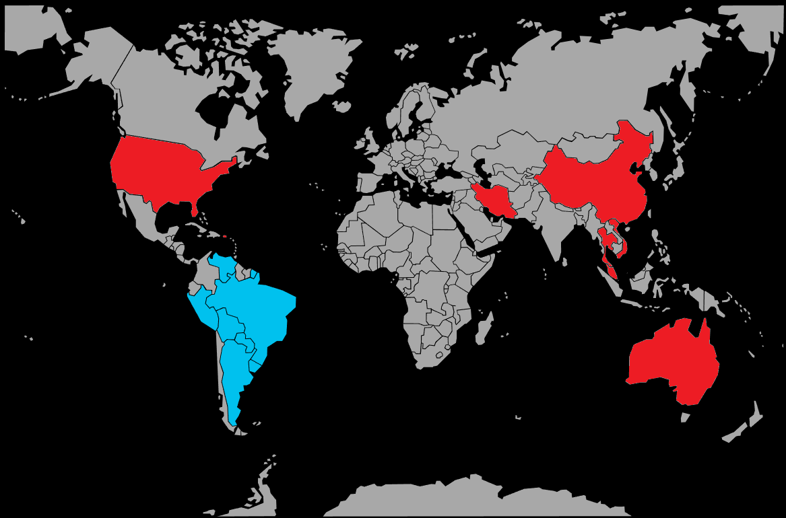

Systématique
- Ordre : Cichliformes
- Famille : Cichlidae
- Genre : Astronotus
- Espèce : Astronotus ocellatus
Astronotus ocellatus est un grand cichlidé sud‑américain très populaire en aquariophilie, souvent considéré comme l’« oscar » classique des bacs d’Amérique du Sud.
Il occupe toute la hauteur de la colonne d’eau et atteint facilement 30 à 35 cm, voire un peu plus, dans un aquarium spacieux et bien entretenu.
Poisson intelligent, curieux et très interactif avec son soigneur, l’oscar est aussi un cichlidé territorial, surtout à l’âge adulte et en période de reproduction; il inspecte le décor, déplace les éléments et fouille le substrat.
En aquarium, il utilise la zone médiane et le fond, choisit des repères (racines, pierres, grottes) qu’il défend plus ou moins activement; la cohabitation doit se faire avec des poissons de taille et de robustesse comparables, dans un volume suffisant.
Mode : ovipare, pondeur sur substrat découvert; le couple nettoie une pierre, une racine ou une surface plane avant que la femelle n’y dépose plusieurs centaines à quelques milliers d’œufs.
Les deux parents gardent et ventilent les œufs, déplacent éventuellement les larves et protègent ensuite le nuage d’alevins en nage libre, avec une défense du territoire particulièrement marquée.
Dimorphisme sexuel : très peu marqué; les différences de taille, de forme de la tête ou de la papille génitale en période de reproduction permettent parfois de distinguer les sexes, mais le sexage reste difficile hors observation de couple.
Espérance de vie : en captivité, l’oscar peut dépasser 10 ans, voire plus de 15 ans, lorsque le volume, la qualité d’eau et la nourriture sont adaptés.
L’espèce fréquente des eaux lentes et calmes du bassin amazonien et de l’Orénoque : bras morts, zones inondées, marges de rivières encombrées de racines et de bois, avec substrat meuble et abris multiples.
Répartition
Origine naturelle :
- Bassin de l’Amazone (Brésil, Pérou, Équateur, Bolivie).
- Bassin de l’Orénoque (Colombie, Venezuela).
- Guyane française et autres Guyanes.
- Présence signalée dans certains bassins du Paraguay, de l’Uruguay et du nord de l’Argentine.
L’oscar est largement distribué en Amérique du Sud, présent dans de nombreux affluents (Amazonas, Negro, Madeira, Tapajós, Tocantins, Orénoque, etc.).
Paramètres de maintenance
Température : 23 à 27 °C, avec une tolérance plus large entre environ 22 et 30 °C.
pH : 6,0 à 7,5, de légèrement acide à neutre.
GH : 5 à 15 °dGH, eau douce à moyennement dure.
Courant : faible à modéré, avec filtration puissante et renouvellements d’eau réguliers indispensables pour un grand cichlidé très pollueur.
Volume conseillé : au minimum 450 L pour un couple, avec un bac spacieux, décor solide et zones bien structurées.
Régime alimentaire
Régime : omnivore à nette tendance carnivore; dans la nature, il consomme poissons, invertébrés, insectes, mais aussi fruits tombés et matière végétale.
En captivité, il accepte facilement granulés et sticks pour grands cichlidés, complétés par des proies congelées ou fraîches (crevettes, moules, morceaux de poisson, vers) et une part végétale pour l’équilibre digestif.
Il convient de privilégier des rations variées mais modérées, afin de limiter l’obésité et la pollution organique importante générée par ce poisson vorace.